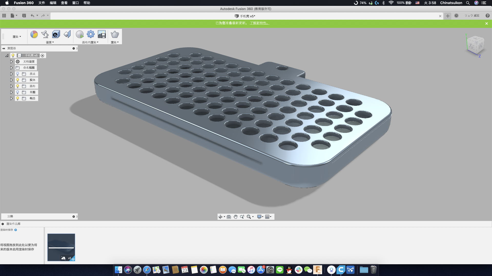
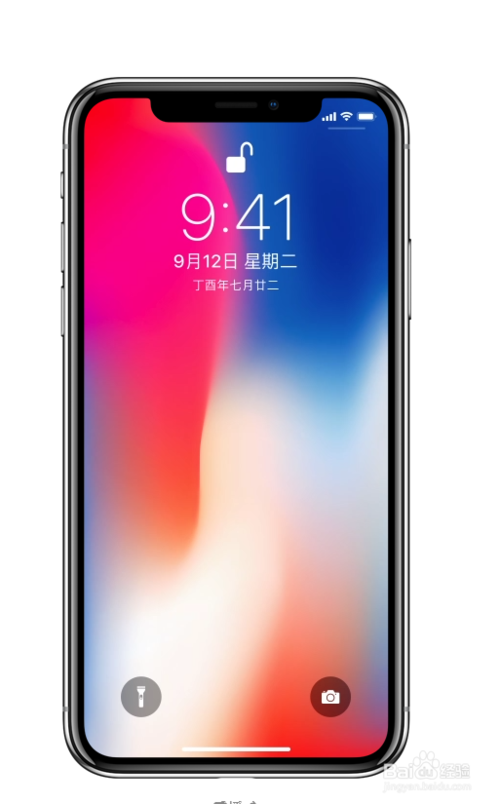
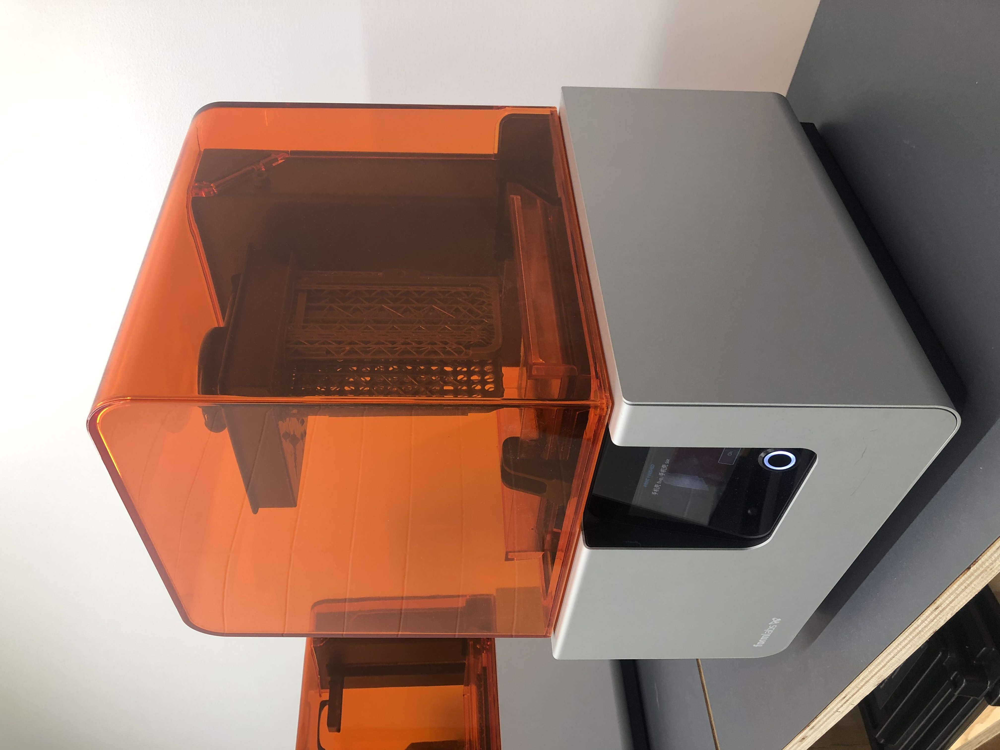
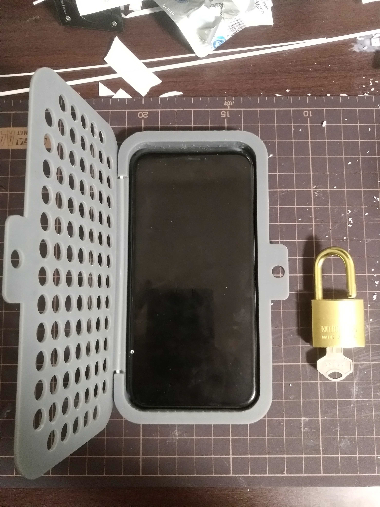

ハッキング対象：iphonexのサイズ、ケース

今回、私はハッキング対象はiphonexのサイズです、何故、iphonexのサイズをハッキングしたのか？
ハッキングの動機は３つがあります
1:授業の集中力が上げたい
2:スマホはもし盗まれたら、スマホを売れないになして欲しい
3:もしiphoneの指紋認証、顔認証の機能が壊れた場合、個人情報を守ってほしい
そのために、iphonexのサイズをハッキングして物理的な暗証番号『ロック』をつけたのオリジナルの折りたためケースを作りました
まず、iphonexの正面図を２つ探す方法があります、
１:アプルウェブサイトから第三方メーカーに公開したデータからハッキングする

２:iphonexの正面図からハッキングする

でも、今回私がiphonexの正面図からハッキングすることを決めました
さらにfusion360でiphonexの正面図に基づいてケースの3dデータを作りました
最後、form2を利用して、『ロック』をつけたのオリジナルの折りたためケースを作りました。

